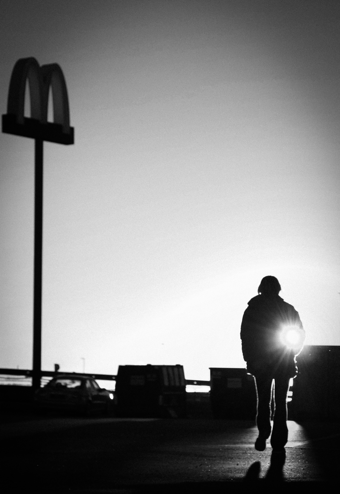
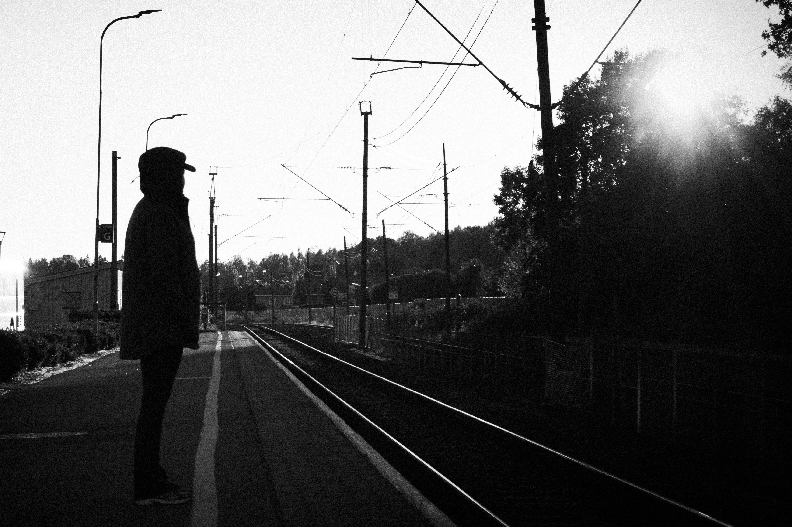
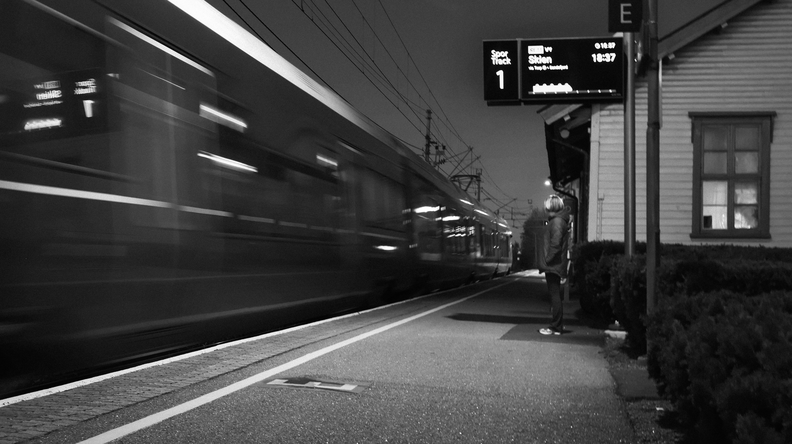
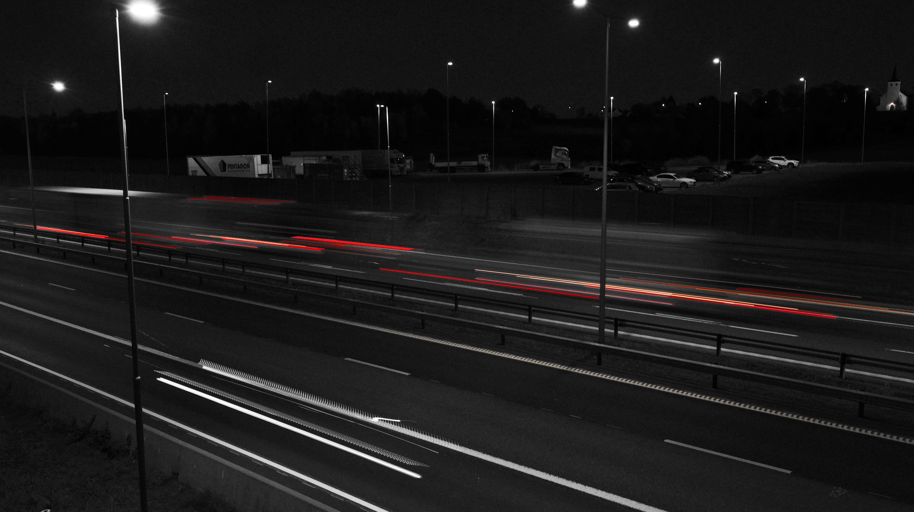
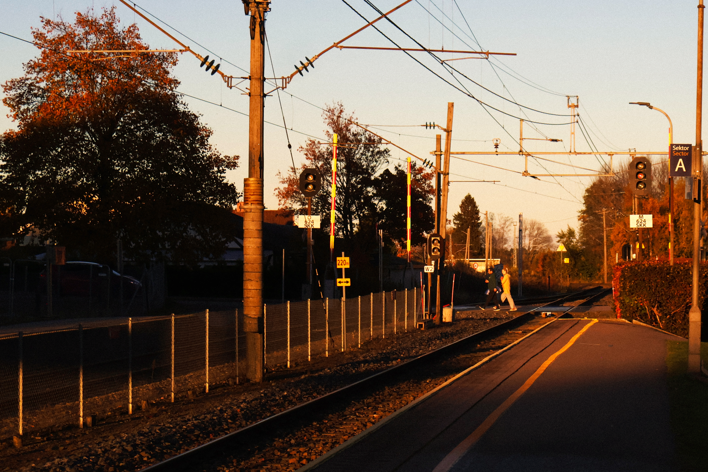
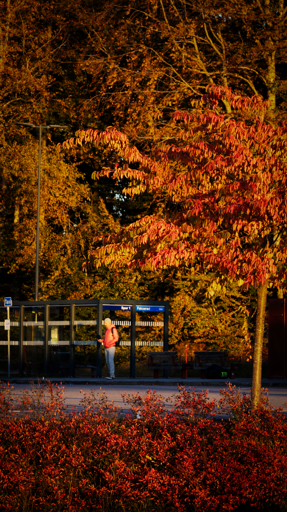

Nettside 1
Fakta om Miami.
Åpne NettsidenFakta om Miami.
Åpne NettsidenKarate.
Åpne NettsidenAnmeldelse av Red Dead Redemption 2.
Åpne Nettsiden
Silhuett av en person som går mot sterkt lys ved siden av et stort M-skilt

Silhuett av en person som står på en togperrong mot lav sol.

Tog i bevegelse på en stasjon, tatt med lang lukkertid.

Lysstriper fra biler på en motorvei om kvelden.

Togspor og kontaktledninger i varmt høstlys.

Person i rød jakke ved et leskur, omgitt av røde og oransje høstfarger.
Her måtte jeg vise at kameraet bevegde seg bakover imens personen fulgte etter.
Her viste jeg at jeg kunne følge etter personen med kamera.
Her viste jeg at jeg kunne panorere.
Her viste jeg at jeg kunne tilte kamera.
Her demonstrerte jeg zoom.
Videoen handler om en person som stalker en annen. Det var en kort oppgave hvor vi skulle fortelle en historie med levende bilder (film).
Dette var en innlevering i teknologiforståelse, hvor vi skulle gå inn i bærekraft i Gjennestad drift. Vi valgte å lage en reportasje om Soilsteaming og Solcellepanel.